class: center, middle ## Writing reproducible & executable scientific papers with R & Python <img src="logo-name.svg" width="40%" /> #### eScience Institute, University of Washington #### 10 June 2019 <div> <a href="https://twitter.com/NokomeBentley">@NokomeBentley</a> <a href="https://twitter.com/stencila">@stencila</a> </div> <p style="position: absolute; bottom: 10px; font-size: 10px">Press <code>P</code> to switch to presenter mode</p> --- class: center, middle 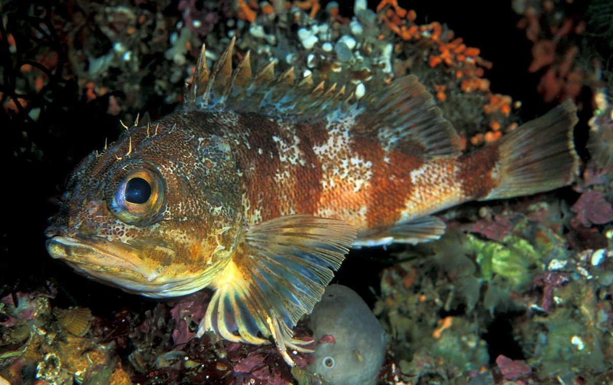 <p><small><em>Helicolenus percoides</em></small></p> --- class: center, middle # About us --- class: center, middle 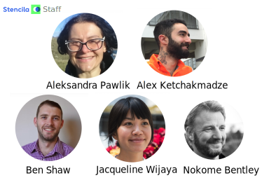 --- class: center, middle 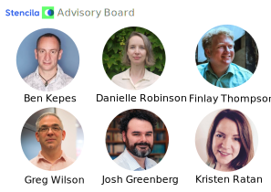 --- class: center, middle 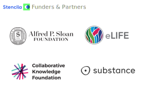 --- class: center ### Vision <p style="font-size: 2rem; width: 40rem; margin: auto"><em> Executable documents that are <strong>composable, reusable</strong>, and <strong>accessible</strong> to a diverse community of users. </em></p> --- class: center ### Mission <p style="font-size: 2rem; width: 40rem; margin: auto"><em> To <strong>close the gaps</strong> in computational skills by creating a framework for executable documents that provide <strong>alternative interfaces for different types of users</strong>. A set of <strong>tools with low floors, smooth ramps and high ceilings</strong>; that are easy to pick up but allow user's to grow their skills without restricting them. </em></p> --- class: center, middle ## On fish, people, and science ### ... and reproducible documents --- class: center, middle 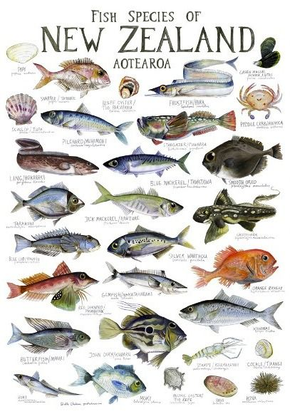 --- class: center, middle 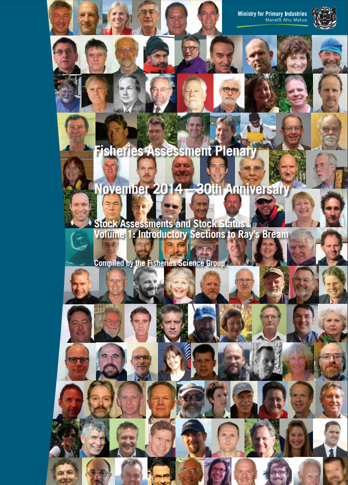 --- class: center, middle 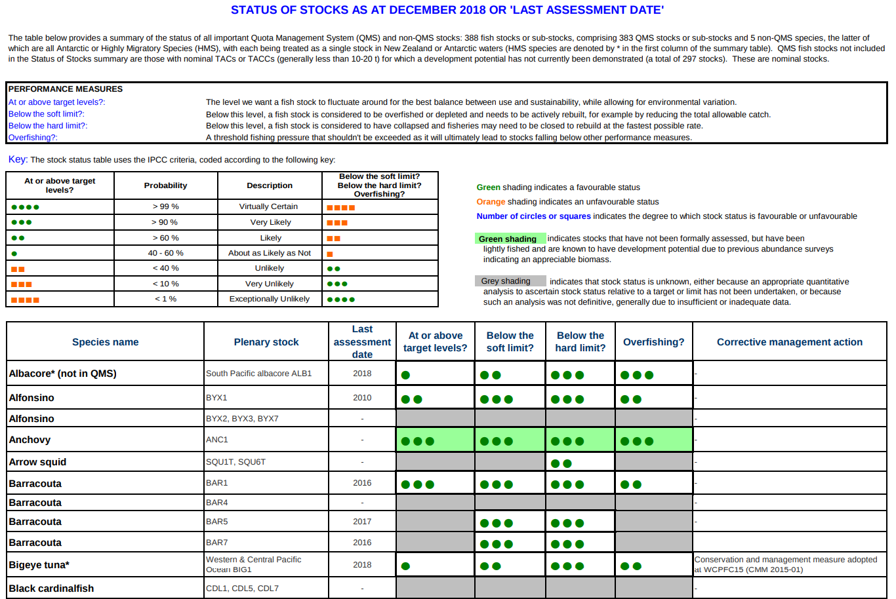 --- class: center, middle <video height="600px" controls> <source src="bentley-et-al-2014.mp4" type="video/mp4"> </video> --- class: center, middle 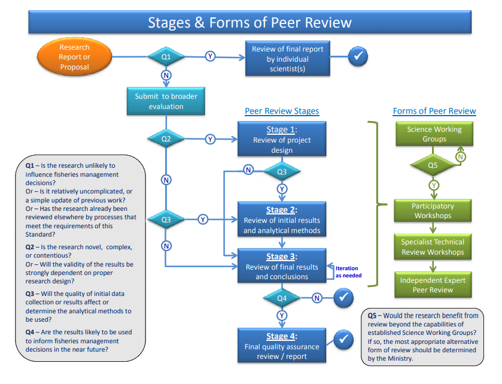 --- ### The first problem: authoring Authoring scientific documents: - that mix narrative with results - that are derived from large data sets - that require early and often peer review - need substantial, multiple updates to results - while still staying sane! --- class: center, middle # On approaches to reproducible documents --- class: center ### A poor solution 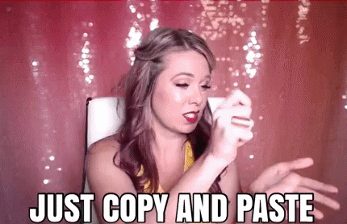 --- class: center ### A good solution Reproducible documents. Not because it's the **"right" way** to do it, but because it's the **best way** to do it. --- ### An approach to reproducible documents #### Programmatic content generation --- ### An approach to reproducible documents #### Programmatic content generation --- class: smaller ### The second problem: gaps in skills, gaps between formats 1. **Run R code** to generate HTML 2. Convert **HTML to Word and email** to collegues. 3. They modify Word document with **comments and track changes**. I spend hours translating that into code changes 4. **Me**: Can't you just download RStudio, install the necessary packages and edit the R code directly<br> **Them**: No! 5. **Go to 1** --- class: center, middle 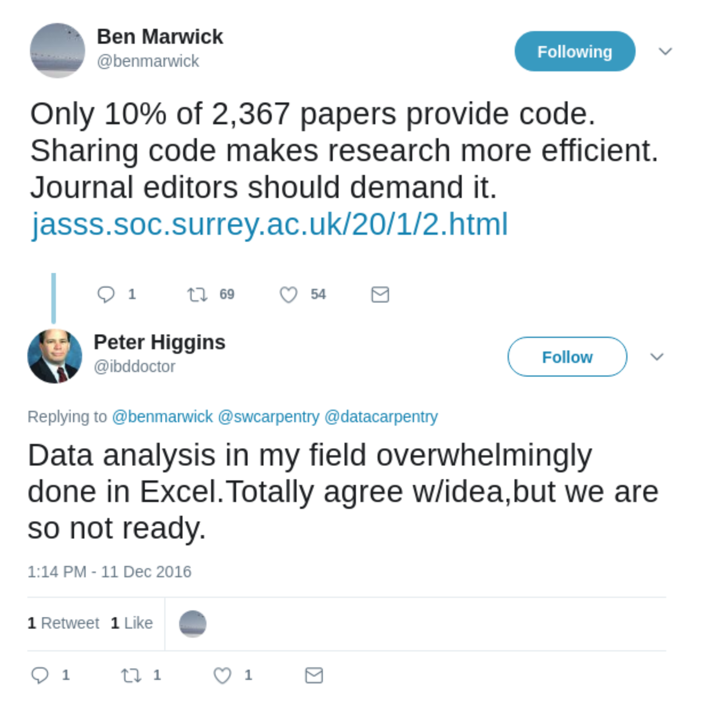 --- class: center, middle 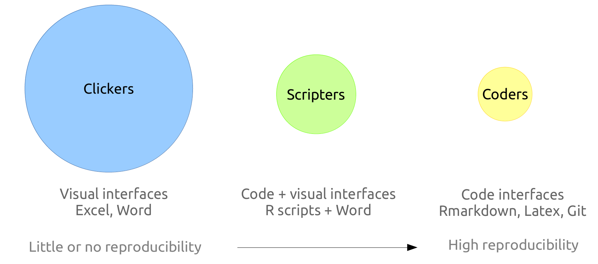 --- class: center, middle <video class="centered" height="580px" controls="controls" autoplay="" loop=""> <source src="doc-screencast.mp4" type="video/mp4"> </video> --- class: center, middle ### The third problem: platform gravity --- class: center, middle 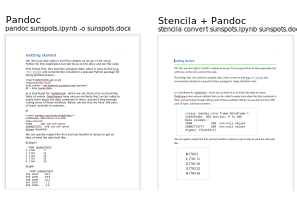 --- class: center, middle 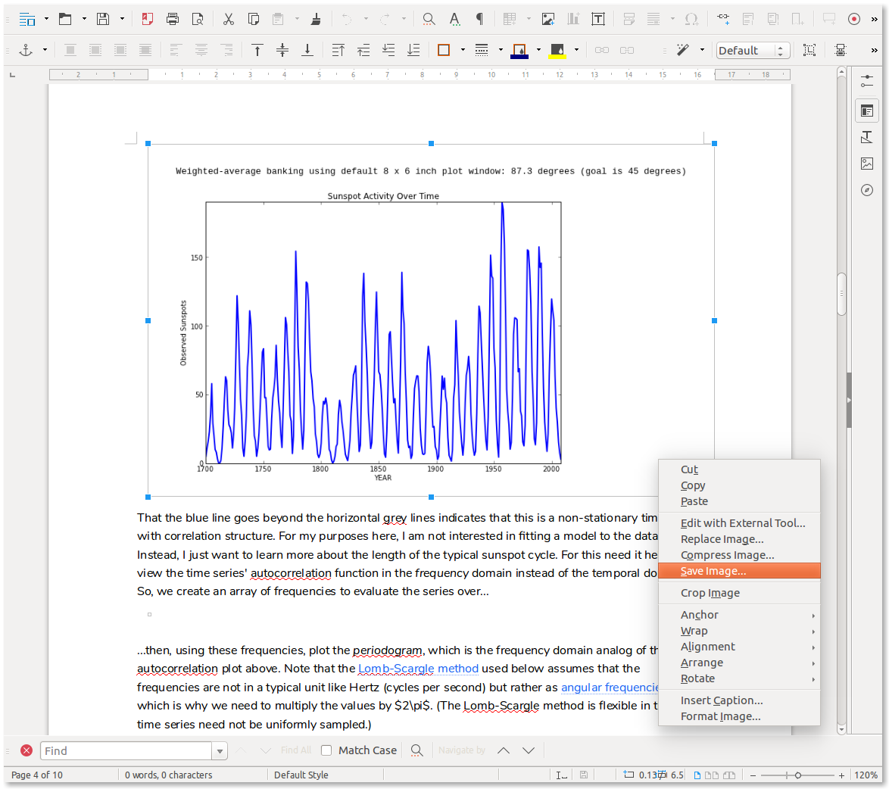 --- class: center, middle ```bash $ pngcheck -tc sunspot-figure.png File: sunspot-figure.png (50854 bytes) JSON: { "type":"CodeChunk", "meta":{"execution_count":18}, "text":"import scipy.optimize as spo\ntarget = np.radians(45) \nslice_obj = np.s_[20:26:0.5, # widths\n 1:4:0.5] # heights \nresults = spo.brute(objective_fcn, slice_obj, args=[target], full_output=True, finish=None)\noptimal_dims, objective_val, search_grid, objective_grid = results" }- OK: sunspot-figure.png (832x518, 32-bit RGB+alpha, non-interlaced, 97.1%). ``` --- class: center, middle # We are not there yet --- class: center, middle ### Word processor documents --- class: center, middle ### Spreadsheet documents 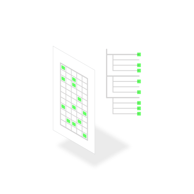 --- class: center, middle ### Computational notebook documents --- class: center, middle ### Rich, next-generation, executable documents --- class: center, middle ### Thank you!